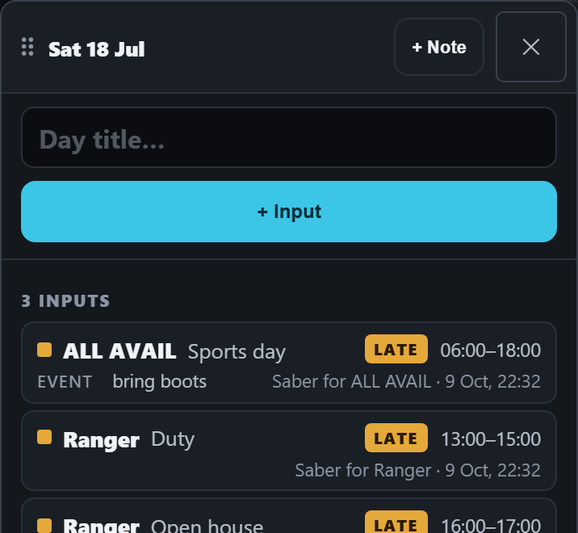
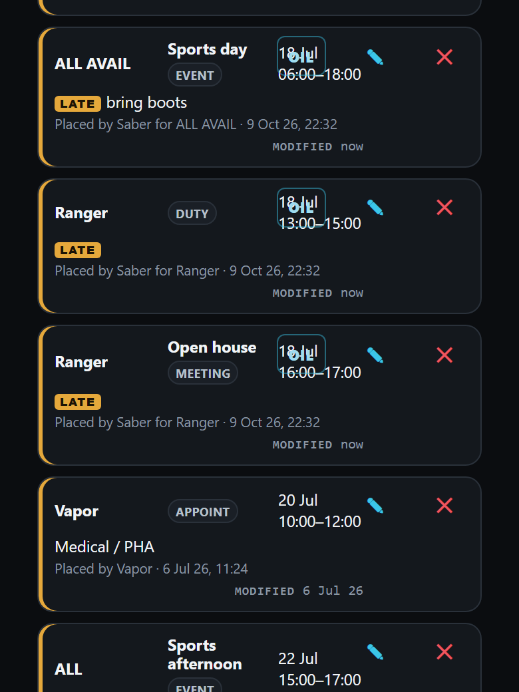
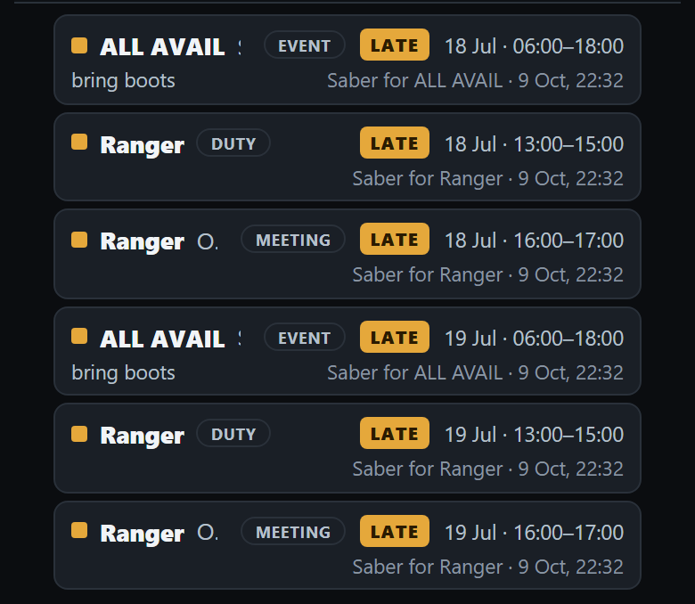
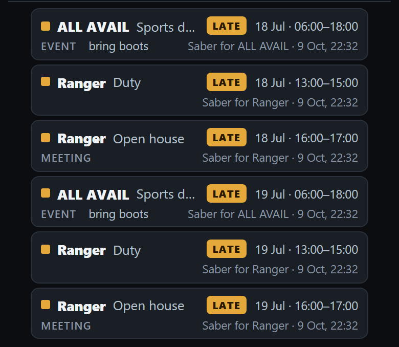
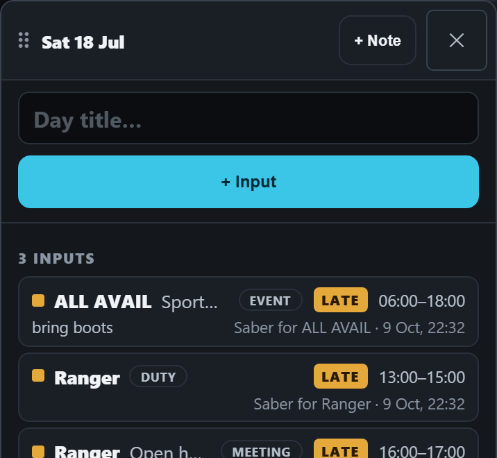
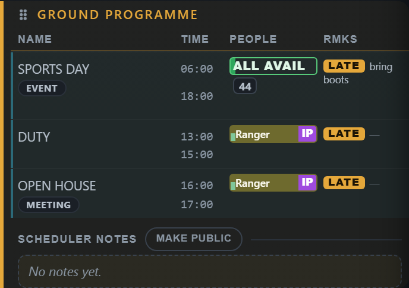
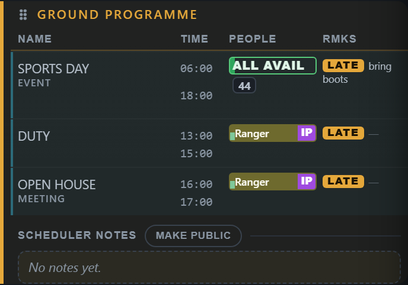

<title>Input Kind Look</title>
<link rel="stylesheet" href="https://fonts.googleapis.com/css2?family=Barlow:wght@400;500;600&family=Barlow+Semi+Condensed:wght@600;700&display=swap">
<style>
  /* One column: how an input's kind looks today on three screens, then ONE look for it drawn two ways, then the choices.
     A single dark look, the app's own: its panels, its cyan, its amber. */
  :root {
    color-scheme: dark;
    --bg: #0b0d11; --panel: #14181e; --edge: #2a313b; --ink: #e9edf2; --ink-2: #a8b1bd; --ink-3: #7a8491;
    --accent: #3bc6e8; --mark: #ffd60a; --done: #57c98a;
    --display: "Barlow Semi Condensed", "Arial Narrow", Arial, sans-serif;
    --body: Barlow, "Segoe UI", Arial, sans-serif;
  }
  body { background: var(--bg); color: var(--ink); font-family: var(--body); font-size: 16px; line-height: 1.45; }
  main { max-width: 760px; margin: 0 auto; padding-inline: 16px; padding-block: 20px 48px; display: flex; flex-direction: column; gap: 28px; }
  h1 { font-family: var(--display); font-weight: 700; font-size: 30px; line-height: 1.1; margin: 0; text-wrap: balance; }
  h2 { font-family: var(--display); font-weight: 700; font-size: 21px; margin: 0; text-wrap: balance; }
  p { margin: 0; color: var(--ink-2); max-width: 62ch; }
  .lede { color: var(--ink); }
  .tag { font-family: var(--display); font-weight: 700; letter-spacing: .08em; text-transform: uppercase; font-size: 12px; color: var(--ink-3); }
  .tag.new { color: var(--mark); }
  .pair { display: grid; grid-template-columns: repeat(auto-fit, minmax(260px, 1fr)); gap: 16px; align-items: start; }
  figure { margin: 0; display: flex; flex-direction: column; gap: 8px; min-width: 0; }
  figure button { all: unset; cursor: zoom-in; display: block; border: 1px solid var(--edge); border-radius: 12px; overflow: hidden; background: var(--panel); }
  figure button:focus-visible { outline: 2px solid var(--accent); outline-offset: 2px; }
  figure img { display: block; width: 100%; height: auto; }
  figcaption { display: flex; flex-direction: column; gap: 2px; }
  figcaption b { font-weight: 600; color: var(--ink); }
  figcaption span { color: var(--ink-2); font-size: 15px; }
  section { display: flex; flex-direction: column; gap: 12px; }
  .q { border: 1px solid var(--edge); border-radius: 12px; background: var(--panel); padding: 14px 16px; display: flex; flex-direction: column; gap: 6px; }
  .q b { color: var(--ink); font-weight: 600; }
  .q span { color: var(--ink-2); }
  .q .rec { color: var(--accent); font-weight: 600; }
  dialog { border: 0; padding: 0; background: #000; max-width: 100vw; max-height: 100dvh; width: 100vw; height: 100dvh; overflow: auto; }
  dialog::backdrop { background: #000; }
  dialog img { display: block; width: 780px; max-width: none; margin: 0 auto; cursor: zoom-out; }
  dialog button { position: fixed; top: calc(10px + env(safe-area-inset-top, 0px)); right: 12px; font: 600 15px var(--body); color: var(--ink); background: var(--panel); border: 1px solid var(--edge); border-radius: 10px; padding: 8px 14px; }
</style>
<main>
  <header style="display:flex;flex-direction:column;gap:8px">
    <span class="tag">A drawing · nothing here is built yet</span>
    <h1>One look for an input’s kind</h1>
    <p class="lede">Every picture is the real app on a phone, re-arranged. Three inputs on one Saturday: “Sports day” (an Event for ALL AVAIL), a plain Duty for Ranger, and “Open house” (a Meeting for Ranger). Tap a picture to see it full size.</p>
  </header>

  <section>
    <h2>Today: two different looks</h2>
    <div class="pair">
      <figure>
        <button type="button" data-zoom="img/input-list-as-day-card/a-day-as-built.png" aria-label="Open picture: the opened day today"></button>
        <figcaption><span class="tag">The opened day</span><b>Compact cards, the kind in small grey capitals</b><span>A tap on a card opens it to edit or delete.</span></figcaption>
      </figure>
      <figure>
        <button type="button" data-zoom="img/input-list-as-day-card/b-list-as-built.png" aria-label="Open picture: the Inputs list today"></button>
        <figcaption><span class="tag">The Inputs list</span><b>Taller cards, the kind as a pill, a pencil and a cross</b><span>Each card is about twice as tall. The picture also shows an older fault: the OIL button sits on top of the date.</span></figcaption>
      </figure>
    </div>
  </section>

  <section>
    <h2>The list, using the day’s cards</h2>
    <p>The same cards as the opened day, with the date added. No pencil, no cross: a tap opens the input. Drawn with the kind both ways.</p>
    <div class="pair">
      <figure>
        <button type="button" data-zoom="img/input-list-as-day-card/d-list-cards-pill.png" aria-label="Open picture: the list with the kind as a pill"></button>
        <figcaption><span class="tag new">A · the kind as a pill</span><b>Every card carries its kind’s pill</b><span>One look for every input, titled or not. The cost: on a phone the pill takes the title’s room. “Sports day” is cut to “S”, “Open house” to “O.”</span></figcaption>
      </figure>
      <figure>
        <button type="button" data-zoom="img/input-list-as-day-card/e-list-cards-grey.png" aria-label="Open picture: the list with the kind in small grey capitals"></button>
        <figcaption><span class="tag new">B · the kind in small grey capitals</span><b>As agreed for the opened day</b><span>The title keeps the first line. A plain input shows its kind as its name; a titled one shows the kind small on the line below.</span></figcaption>
      </figure>
    </div>
  </section>

  <section>
    <h2>The same two looks on the opened day</h2>
    <div class="pair">
      <figure>
        <button type="button" data-zoom="img/input-list-as-day-card/c-day-pill.png" aria-label="Open picture: the opened day with the kind as a pill"></button>
        <figcaption><span class="tag new">A · pill</span><b>The title is cut here too</b><span>“Sport…”, “Open h…”. The first line already holds the person, LATE and the hours.</span></figcaption>
      </figure>
      <figure>
        <button type="button" data-zoom="img/input-list-as-day-card/a-day-as-built.png" aria-label="Open picture: the opened day with the kind in small grey capitals"></button>
        <figcaption><span class="tag new">B · small grey capitals</span><b>As built now</b><span>The titles are whole.</span></figcaption>
      </figure>
    </div>
  </section>

  <section>
    <h2>And on the schedule’s row</h2>
    <div class="pair">
      <figure>
        <button type="button" data-zoom="img/input-list-as-day-card/g-row-pill.png" aria-label="Open picture: the schedule row with the kind as a pill"></button>
        <figcaption><span class="tag new">A · pill</span><b>A small pill under the title</b><span>It fits: the row is no taller.</span></figcaption>
      </figure>
      <figure>
        <button type="button" data-zoom="img/input-list-as-day-card/f-row-grey.png" aria-label="Open picture: the schedule row with the kind in small grey capitals"></button>
        <figcaption><span class="tag new">B · small grey capitals</span><b>As built now</b></figcaption>
      </figure>
    </div>
  </section>

  <section>
    <h2>Yours to choose</h2>
    <div class="q"><b>1 · The kind’s one look</b><span><span class="rec">Recommended: B, small grey capitals.</span> On a phone the pill costs the title its room on the cards. If you prefer the pill, it works best with the pill moved to the second line, where B’s grey word stands. I can draw that.</span></div>
    <div class="q"><b>2 · The list takes the day’s cards</b><span><span class="rec">Recommended: yes.</span> About twice as many inputs on a screen, and the overlapping OIL button goes with the old card.</span></div>
    <div class="q"><b>3 · No pencil, no cross: a tap opens the input</b><span><span class="rec">Recommended: yes, on a phone and on a desktop.</span> One way to edit an input everywhere. The desktop list keeps its columns and its sorting.</span></div>
    <div class="q"><b>4 · Keep the list at all?</b><span><span class="rec">Recommended: keep it, slimmer.</span> It does four things the calendar cannot: show many weeks in one scroll, sort by any column, search across all dates, and export. As drawn here it loses its own edit-in-place, which is the part that duplicates the calendar.</span></div>
  </section>
</main>
<dialog id="zoom" aria-label="Picture, full size"><button type="button" id="zoomClose">Close</button></dialog>
<script>
  const dlg = document.getElementById('zoom'), big = document.getElementById('zoomImg')
  document.querySelectorAll('[data-zoom]').forEach(b => b.addEventListener('click', () => {
    big.src = b.dataset.zoom; big.alt = b.querySelector('img').alt
    if (dlg.showModal) dlg.showModal(); else dlg.setAttribute('open', '')
  }))
  const shut = () => { if (dlg.close) dlg.close(); else dlg.removeAttribute('open') }
  document.getElementById('zoomClose').addEventListener('click', shut)
  big.addEventListener('click', shut)
</script>
